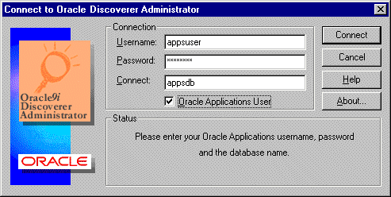
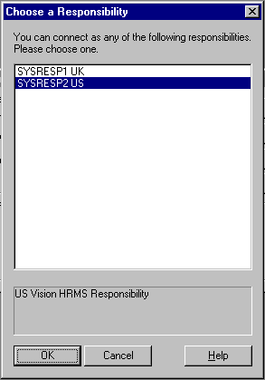
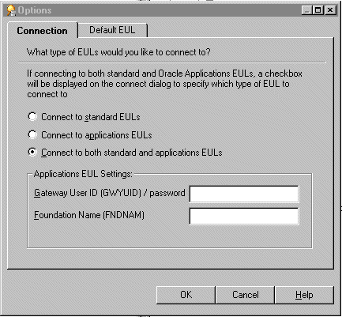
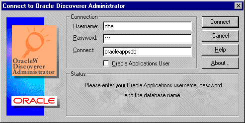
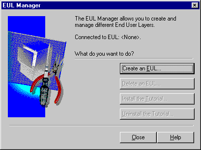
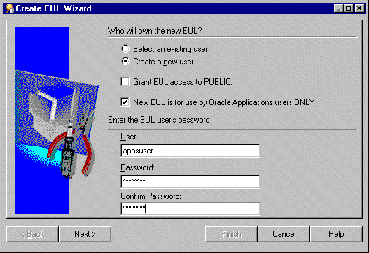
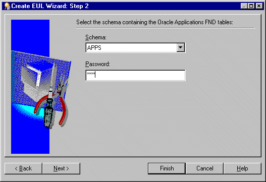
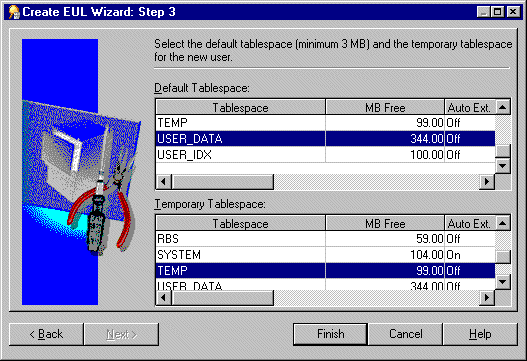
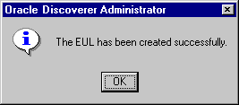

10g (9.0.4)
Part Number B10270-01
Library |
Contents |
Index |
| Oracle Discoverer Administrator Administration Guide (Online Help) 10g (9.0.4) Part Number B10270-01 |
|
This chapter explains how Discoverer supports access to Oracle Applications databases using Oracle Applications security and contains the following topics:
Oracle Applications are Oracle's integrated enterprise resource planning (ERP) and customer relationship management (CRM) solutions. Oracle Applications enable companies to run and manage their worldwide operations from a central site. For further information see http://www.oracle.com/.
Oracle Applications responsibilities are akin to database roles. They are an abstraction to which privileges can be assigned and which can apply to many users. Oracle Applications responsibilities are used to control Oracle Applications users functional and data access.
An Oracle Applications user connects to an Oracle Applications database and chooses a single Oracle Applications responsibility. Each Oracle Applications responsibility can have a set of privileges associated with it.
This means that an Oracle Applications user will by default assume the task privileges granted to the chosen responsibility (for more information see "How to specify the Oracle Applications users/responsibilities who can perform a specific task"). To change responsibility but keep the same user you must reconnect.
Discoverer supports the following features for Oracle Applications:
An Oracle Applications mode EUL is a Discoverer End User Layer based on an Oracle Applications schema (containing the Oracle Applications FND (Foundation) tables and views). Oracle Applications EULs employ Oracle Applications user names and responsibilities whereas standard EULs use database users and roles.
The only database user (i.e. non-Oracle Applications user) that can connect to an Oracle Applications mode EUL is the EUL owner. The EUL owner is the database user that is used to create the EUL. However, the EUL owner can grant administration privileges to Oracle Applications users. The authorized Oracle Applications users can then connect to the Oracle Applications mode EUL using Discoverer Administrator.
Many Oracle Applications tables and views are user-sensitive, and will return different results depending on which user/responsibility is used to access these tables/views. Discoverer correctly runs queries that respect these user-sensitive tables and views.
When connecting to Discoverer as an Oracle Applications user/responsibility, Discoverer will automatically connect to the correct schema (either APPS or APPS_MRC) to support Oracle Applications instances that have implemented the multiple reporting currencies feature.
Using Discoverer with Oracle Applications multiple organizations support enables you to work with data from more than one organization. Discoverer end users can query and analyze data from a set of organizations to which they have been granted access. The folders in the EUL you are connecting to must be based on Oracle Business Views (available in Oracle Applications 11i).
These features are only available when Discoverer is running in Oracle Applications mode. In other words, when Discoverer is running with an Oracle Applications mode EUL against an Oracle Applications database.
To start Discoverer as an Oracle Applications user the following conditions must be met:
The following differences apply in Discoverer when running in Oracle Applications mode:
When you run Discoverer in Oracle Applications mode the "Connect to Oracle Discoverer Administrator dialog (for Oracle Applications users)" will either display or not display the Oracle Applications user check box.

For more information, see "How to configure the Connect dialog for Oracle Applications users".
The following conditions apply when the Connect dialog is configured for Oracle Applications users:
Once you have entered details into the Connect dialog and clicked OK Discoverer displays a Responsibilities dialog and you can choose the responsibility with which to connect (if the Oracle Applications user you are connecting with has more than one responsibility).
You can bypass the Choose a Responsibility dialog by entering both the Oracle Applications user and the responsibility into the Username field in the form 'user:responsibility'.

When you run Discoverer Administrator as an Oracle Applications user, then the Discoverer Privileges and Security dialogs display Oracle Applications user names and responsibilities. You can assign privileges and security to Oracle Applications user names and responsibilities. When you run Discoverer Administrator as a database user then the Discoverer Privileges and Security dialogs display database users and database roles.
For more information about using privileges to control access to information, see Chapter 6, "About Discoverer and security".
As the Discoverer manager of an Oracle Applications mode EUL you must be aware of the following:
When a Discoverer end user uses a workbook that accesses Oracle Applications secure views, the user might see different results on different machines (even when using the same connection information) if the machines have different local language (NLS) settings.
When using Oracle Applications secure views, the local language setting of the machine affects the data retrieved by Discoverer. Discoverer will display data consistently across machines with the same language setting.
To change a machines local language setting (on Windows), choose Start | Settings | Control Panel | Regional Settings and change the language value.
For more information on secure views, see Chapter 19, "How to use query prediction with secure views".
You can also define a language setting (NLS) for a user, responsibility, application or site using the Profiles setting in Oracle Applications. For more information see the Oracle Applications documentation.
Before you connect to Oracle Discoverer as an Oracle Applications user, you must configure the Connect dialog to default to Oracle Applications users.
To configure the Connect dialog for Discoverer Administrator and Discoverer Desktop:

When you use the Options dialog: Connections tab and you select either the Connect to applications EULs radio button or the Connect to both standard and applications EULs radio button you can enter values into these fields, but Discoverer uses default values if you do not. The fields and default values are as follows:
If you do not know the values to enter into the above fields contact your Oracle Applications database administrator.
You create an Oracle Applications EUL in two ways:
To create an Oracle Applications EUL using the Create EUL dialog:
For example, dba/dbapassword@oracleappsdb.
Note: You must not specify the user name of an Oracle Applications user. The EUL owner is always a database user.

Note: The Oracle Applications user Connect dialog might display the Oracle Applications User check box. For more information see "How to configure the Connect dialog for Oracle Applications users".
If no EULs exist Discoverer displays a dialog for you to choose whether to create an EUL now.

This is where you create a new database user and Oracle Applications EUL.

then select a user from the drop down list in the User field
then enter a user name, password/confirmation for the new user
Note: The EUL owner is always a database user. Please specify a database user.
Hint: We recommend that you clear the Grant EUL access to PUBLIC check box to restrict public access to your EUL tables. If you do not select the Grant EUL access to PUBLIC check box, but still want other database users to have access to your EUL tables, you will need to grant access to your EUL tables manually.
If you want to grant all database users access to your EUL tables you must select the Grant EUL access to PUBLIC check box.


Hint: Ask your Oracle Applications database administrator if you are not sure.
Discoverer displays a dialog to confirm the creation of the new EUL:

Discoverer displays a dialog that gives you the option to install tutorial data into the new EUL.
Discoverer displays a dialog that gives you the option to reconnect to the database as the owner of the new Oracle Applications EUL you have just created, or to remain connected as the DBA.
You can grant task privileges to all Oracle Applications users in one action by using the Public user.
To grant task privileges to all Oracle Applications users:
The Privileges dialog contains the Public user. The public user is not an Oracle Applications user but represents all Oracle Applications users. You can grant a privilege to every Oracle Applications user by granting that privilege to the Public user. You can subsequently modify individual users' privileges as required.
For more information, see Chapter 6, "How to specify the tasks a user or role (responsibility) can perform".
This task describes how to grant (or deny) access permission for business areas to specific users or responsibilities.
For information about Oracle Applications responsibilities, see "What are Oracle Applications responsibilities?".
Note: When completing the following task there is a notable difference between what Oracle database users and Oracle Applications users will see in the dialog:
For more information about this task see Chapter 6, "How to specify a user or role (responsibility) that can access a business area".
This task describes how to specify which business areas a specific Oracle Applications user or responsibility can access.
For information about Oracle Applications responsibilities, see "What are Oracle Applications responsibilities?"
Note: When completing the following task there is a notable difference between what Oracle database users and Oracle Applications users will see in the dialog:
For information about this task see Chapter 6, "How to specify the business areas a user or role (responsibility) can access".
This section describes how to specify the tasks a specific user or responsibility can perform.
For information about Oracle Applications responsibilities, see "What are Oracle Applications responsibilities?".
Note: When completing the following task there is a notable difference between what Oracle database users and Oracle Applications users will see in the dialog:
For information about this task see Chapter 6, "How to specify the tasks a user or role (responsibility) can perform".
This section describes how to specify the users or responsibilities that can perform a specific task.
For information about Oracle Applications responsibilities, see "What are Oracle Applications responsibilities?".
Note: When completing the following task there is a notable difference between what Oracle database users and Oracle Applications users will see in the dialog:
For information about this task see Chapter 6, "How to specify a user or role (responsibility) to perform a specific task".
You can use a custom folder to display the name of your Oracle Applications database user and responsibility in a Discoverer workbook. You might want to do this because Discoverer workbooks can display different results depending on the Oracle Applications database user and responsibility that runs the workbook. This task enables you to identify which Oracle Applications database user and responsibility has run a particular Discoverer workbook.
To display your Oracle Applications database user name and responsibility in a Discoverer workbook using a custom folder:
For example, apps1/apps1password@oracleappsdb:
Note: The PL/SQL functions FND_GLOBAL.USER_NAME and FND_GLOBAL.RESP_NAME must be available in the "PL/SQL Functions dialog: Functions tab" before you can subsequently use them in a custom folder.
To import the PL/SQL functions:
Note: Each PL/SQL function is prefixed with the default Oracle Applications user, Apps (e.g. Apps.FND_GLOBAL.USER_NAME).
Note: You might choose to create these two PL/SQL functions (instead of importing them), if the database takes a long time to display information.
To create the PL/SQL functions:
FND_GLOBAL.USER_NAME into the Function Name field.
FND_GLOBAL.USER_NAME into the Display Name field.
APPS into the Owner field.
For more information, see "Creating and maintaining business areas".
Note: In the following steps you will create a custom folder that contains the items User Name and Resp Name, and then you will include these items in a workbook. To make the custom folder readily available to other Oracle Applications business areas, you can create a new business area to contain just the custom folder.
Select fnd_global.user_name, fnd_global.resp_name from dual;
The SQL statement above creates a custom folder containing the two items, User Name and Resp Name. Discoverer will use the PL/SQL functions (that you previously imported or created) to display the Oracle Applications database user name and responsibility represented by User Name and Resp Name.
For more information, see "How to create custom folders".
For more information about using:
Note: Because this custom folder is not joined to other folders, the items User Name and Resp Name must be the only items on the worksheet.
The Discoverer workbook will contain a worksheet that displays your Oracle Applications database user name and responsibility name.
|
|
 Copyright © 2003 Oracle Corporation. All Rights Reserved. |
|